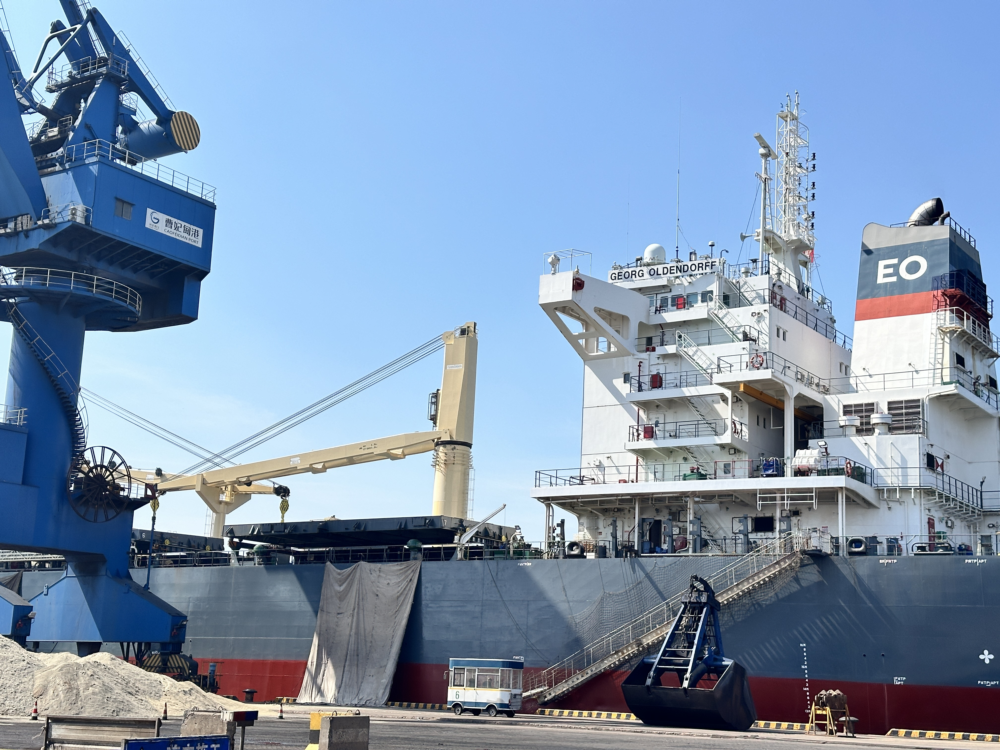
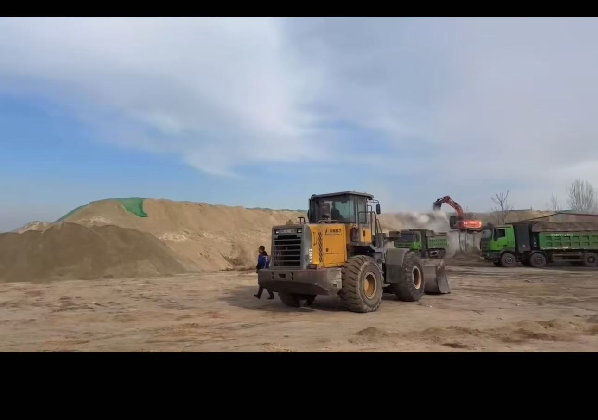

Peru's Cement Rebound Shows Why Clinker Trade Can Stay Busy Even as Local Demand Improves
April data from Peru showed stronger cement shipments and production, but a weaker clinker output profile alongside rising clinker imports and exports. That combination is a useful signal for exporters: healthy demand does not automatically remove the need for cross-border clinker balancing.
秘鲁水泥需求回升，却说明熟料贸易未必会因本地需求改善而降温
秘鲁 2026 年 4 月的数据很有意思：水泥发运和产量都在增长，但熟料产量反而回落，同时熟料进口和出口都在上升。对出口商来说，这释放了一个很实用的信号——终端需求转强，并不意味着跨境熟料平衡会自动消失。

Peru's April 2026 market data drew a more nuanced picture than a simple demand recovery story. National cement shipments reportedly rose 12% year on year to 1.08Mt, while cement production increased 13% to around 970,000t. Yet clinker production moved the other way, falling by about 8% to roughly 720,000t. At the same time, cement exports rose and clinker exports doubled year on year, while clinker imports also climbed strongly.

1. Stronger cement demand did not erase the clinker gap
The headline numbers are constructive: more shipments, more cement output and an active market. But the decline in clinker production matters because it suggests the grinding side of the system can tighten even when the finished-cement market is healthier. That is exactly the kind of setup where imported clinker remains relevant. A growing market does not always have enough domestic intermediate material at the right moment, cost or location.
Recent trade reporting also indicated that Peru's clinker imports rose sharply in April, with Vietnam and South Korea among the notable supply origins. In other words, stronger internal demand did not replace trade flows. It reinforced the need for them.
2. Two-way clinker movement is a sign of balancing, not confusion
What makes Peru especially interesting is that imports and exports both remained active. Clinker exports reportedly doubled year on year in April even as import volumes increased. That can look contradictory at first glance, but in bulk materials it often reflects regional balancing rather than market disorder. Different producers, ports, quality positions and contract structures can support outbound flows from one pocket of the market while another pocket still needs inbound material.
For exporters, this is a useful reminder: destination markets should be read at the cargo-lane level, not only through national demand headlines. A country can post better cement consumption and still remain open to competitive imported clinker, especially when plant utilisation, port access or short-term procurement discipline vary by region.

3. Why this matters beyond Peru
The broader lesson for cement, clinker, GBFS and GGBFS suppliers is that growing markets do not necessarily become closed markets. If clinker balance is uneven, buyers may still need imported tons to protect continuity, manage cost or bridge timing gaps. That keeps room open for disciplined exporters who can offer stable cargo readiness, clear laycan control and dependable port execution.
Takeaway: Peru's April rebound is less about one country and more about how cement systems actually work. Demand can improve, production can rise and clinker trade can still stay active. For international suppliers, that is not noise. It is the operating logic of real bulk-material markets.
秘鲁 2026 年 4 月的数据，呈现出的不是一个简单的“需求回暖”故事，而是一种更真实的贸易结构。全国水泥发运量同比增长 12%，达到 108 万吨；水泥产量同比增长 13%，约 97 万吨。但与此同时，熟料产量却同比下降约 8%，降至大约 72 万吨。更值得注意的是，水泥出口在增长，熟料出口同比翻倍，而熟料进口也同步明显上升。
1. 本地需求走强，并没有抹平熟料缺口
从 headline 看，这组数据是积极的：发运更多，水泥产量更高，市场更活跃。但熟料产量下降这一点非常关键，因为它说明即便成品水泥市场变好，粉磨端所依赖的中间料平衡仍可能收紧。也正是在这种情况下，进口熟料仍然会保有现实意义。一个增长中的市场，并不总能在正确的时间、成本和地理位置上，获得足够的本地熟料供应。
近期贸易报道还显示，秘鲁 4 月熟料进口明显增长，越南和韩国是其中较重要的供给来源。换句话说，本地需求更好，并没有替代贸易流，反而强化了对贸易流的依赖。
2. 熟料“双向流动”并不矛盾，它反而说明市场在做平衡
秘鲁这个案例最有意思的地方，在于进口和出口都没有停。4 月熟料出口同比翻倍，但进口量也在上升。表面上看这似乎有点矛盾，可在散装建材贸易里，这往往不是混乱，而是结构性平衡的表现。不同生产商、不同港口、不同品质结构、不同合同节奏，完全可能导致市场的一部分继续向外发货，而另一部分仍需要向外采购补位。
这对出口商的启发很直接：判断一个目的地市场，不能只看国家层面的需求 headline，更要看具体航线和货盘层面的机会。一个国家即便消费在回升，仍然可能继续接受有竞争力的进口熟料，尤其是在开工率、港口条件或短期采购纪律因区域不同而出现差异的时候。
3. 这件事为何不止和秘鲁有关
对水泥、熟料、GBFS 和 GGBFS 供应商来说，更大的启示是：增长中的市场，并不一定会变成“封闭市场”。只要熟料平衡不是均匀的，买家就仍可能需要进口吨位来保证连续供应、优化成本，或者填补时间窗口。这也就给执行纪律强的出口商留下了空间——前提是你能提供稳定货源、明确装期，以及可靠的港口执行。
结论：秘鲁 4 月的回升，重点不只是“某个国家变好了”，而是再次说明水泥体系真实的运行方式：需求可以改善，产量可以上升，但熟料贸易依然可能持续活跃。对国际供应商而言，这不是噪音，而是现实的大宗建材市场逻辑。
Explore products or discuss your inquiry.
If this market signal is relevant to your sourcing plan, you can review our core product pages or contact us with laycan, quantity, target specification and loading method.
Request a quote